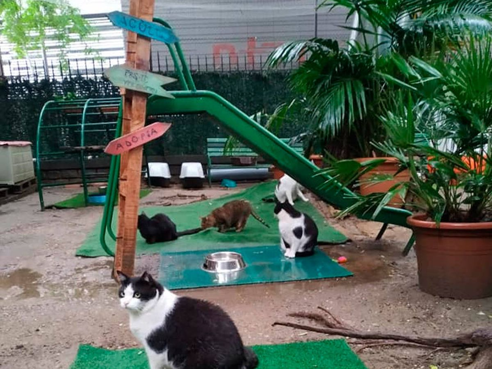
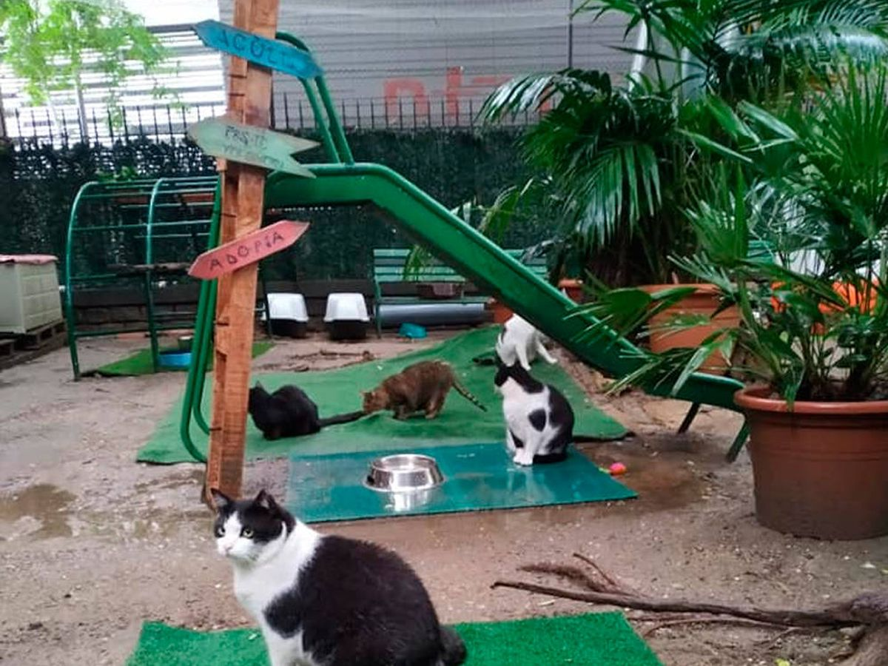

Quiénes Somos
Somos un grupo de amigos, amantes de los gatos. Creamos esta asociacion sin fines de lucro motivados por darle un hogar a cada gato en situacion de calle y abandono. Llevamos 2 años realizando este movimiento en los cuales hemos crecido muchisimo gracias a la colaboración de otros amigos gatunos que se fueron sumando con el correr de los días.
Todas las personas que formamos parte de Garritas Aventureras, nos embarcamos con mucha ilusión en este proyecto, con la esperanza de ofrecer a tantos animales como podamos, la oportunidad de conocer el calor y el amor de un buen hogar, así como luchar por sus derechos y velar por su seguridad, denunciando el posible maltrato o abandono que pude estar sufriendo, luchando para que las leyes existentes puedan ampararlos y la sociedad cree conciencia de lo importante que supone un cambio en el trato hacia los animales.

 
